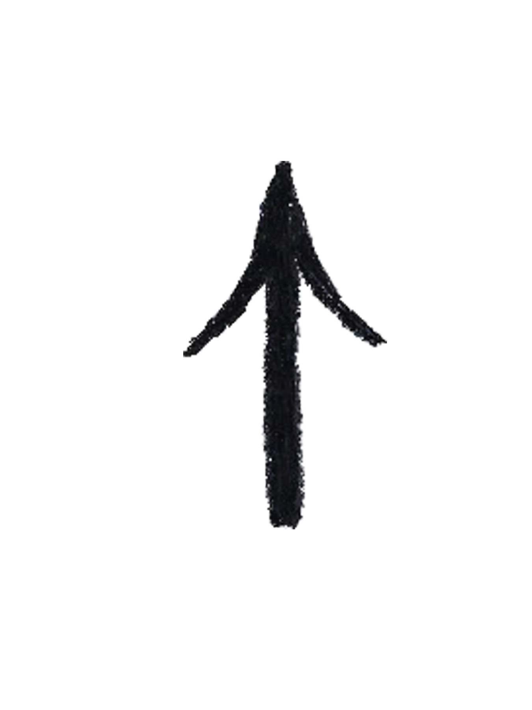

As the first video game ever, Pong made records and was in the homes of many. Pong was massively influential and has proceeded to be known as one of the most iconic games of time. Mimicking tennis you bounce a ball back and forth between two paddles. As the game may have faded into fame it has all but died out, though make for an interesting phenomena.
